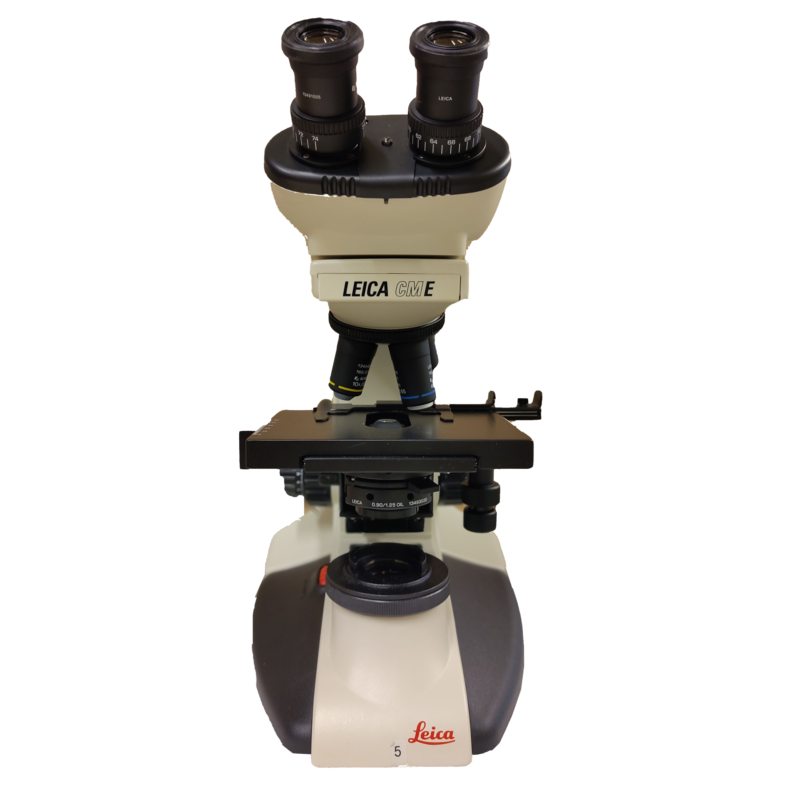

Previous Assignment
Assignment 11:Abbe's theory
Next
Leica
Abbe's theory & resolution
Microscope ready. Load a specimen to study diffraction.
1. Specimen:
No Sample
Grating 500 l/mm
Grating 1000 l/mm
Diatom1
Diatom2
2. Objective:
10x (NA 0.25)
40x (NA 0.65)
100x (NA 1.25)
3. Aperture Control:
Load Specimen
remove Eyepiece
